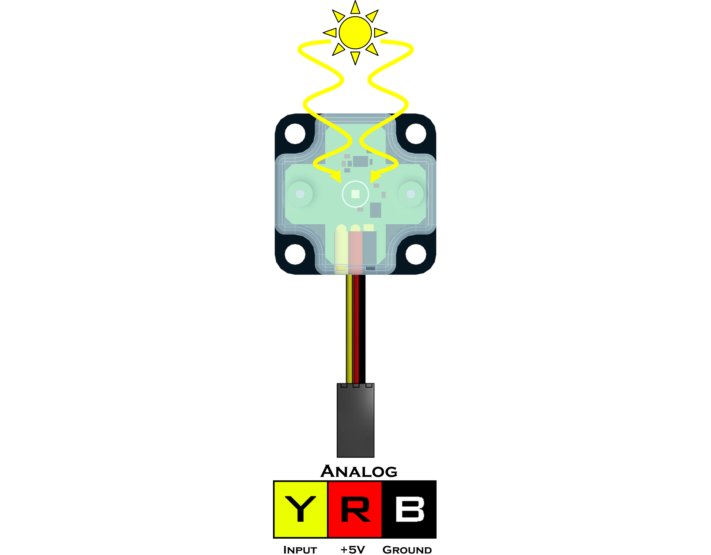

Light Sensor (45-2015)
The Light Sensor detects the ambient light level using a phototransistor. The value returned is a quasi-logarithmic analog value. This means that the Light Sensor can detect slight changes in light and dark environments. A value of 0 indicates no light and a value of 1023 indicates the sensor is flooded with light.
Sensor Type : Three Wire Analog
Dimensions : 32mm x 32mm x 12mm
Mounting Holes : 24mm x 24mm
Power : 5V DC, 22mA Max
Signal Logic Levels : Analog 0V - 5V
Light Sensor Visual Programming BlocksList of available functions:

Fusion.analog(driver, port)
Definition
The following class provides a wrapper for the analog function to tie sensor names directly to the port and read all in one simple motion.
Parameters
driver : Main driver object so the class can call driver functions (f)
port : Analog port the sensor is connected to A0 - A7Returns
Analog Object
Example
import Fusion f = Fusion.driver() light_A0 = Fusion.analog(f, f.A0)read()
Definition
Returns the current analog value read on the sensor.
- Idle value changes depending on the amount of ambient light in the environment.
Parameters
None
Returns
Ambient Light : int (0 - 1023)
Example
import Fusion f = Fusion.driver() light_A0 = Fusion.analog(f, f.A0) print light_A0.read()If any problems arise
Contact Modern Robotics, Inc. at support@modernroboticsinc.com with a detailed description of the steps you have taken and observations you have made.
Email Subject: Fusion Python Light Sensor